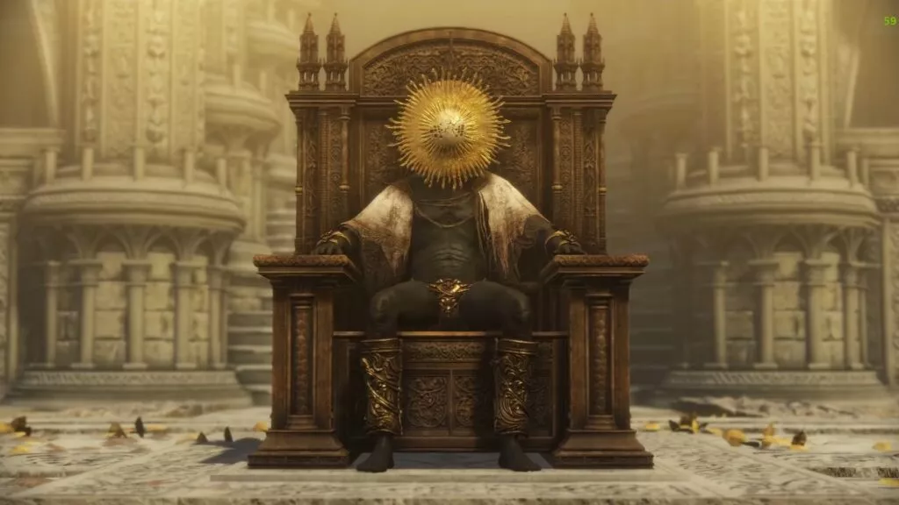

A jornada do Tarnished culmina no confronto final com os grandes herdeiros do Elden Ring, sendo que cada escolha que ele fizer definirá o destino de toda a Terra das Nove. Entre esses herdeiros estão figuras como a própria Rainha Marika, agora transformada em uma entidade corrompida, e os filhos divinos que foram marcados pelo sofrimento e pela ambição.
O Tarnished, dependendo de suas escolhas, pode restaurar o Elden Ring e dar início a uma nova era, onde o equilíbrio entre os poderes divinos e mortais é restabelecido. Essa restauração não é sem sacrifícios e a missão do protagonista é determinada pela verdadeira natureza do Elden Ring e das forças que o sustentam. A sua escolha final pode trazer a verdadeira paz ou um novo ciclo de caos.
Porém, há também a possibilidade de o Tarnished destruir os fragmentos do Elden Ring de uma vez por todas, resultando em um mundo sem governantes, sem ciclos, mas também sem a ordem que a Árvore e seus guardiões proporcionavam.
Neste final, o Tarnished pode escolher entre assumir o lugar de um novo governante, ou, se ele for consumido pela ambição, pode escolher substituir a deusa Marika e tomar para si o trono do Elden Ring.
